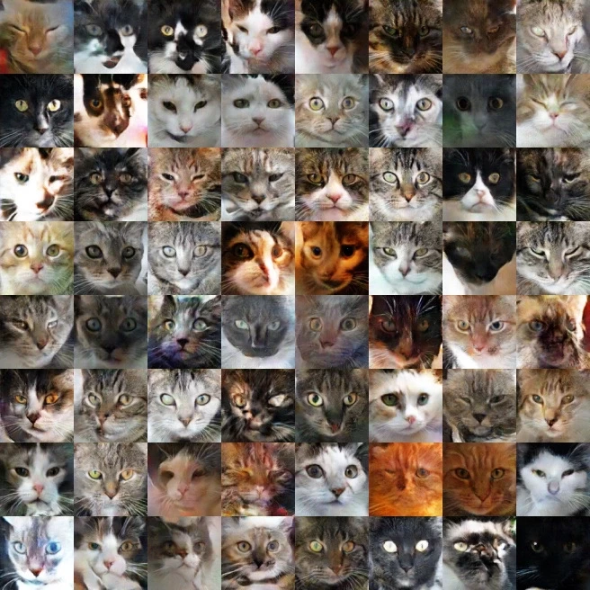
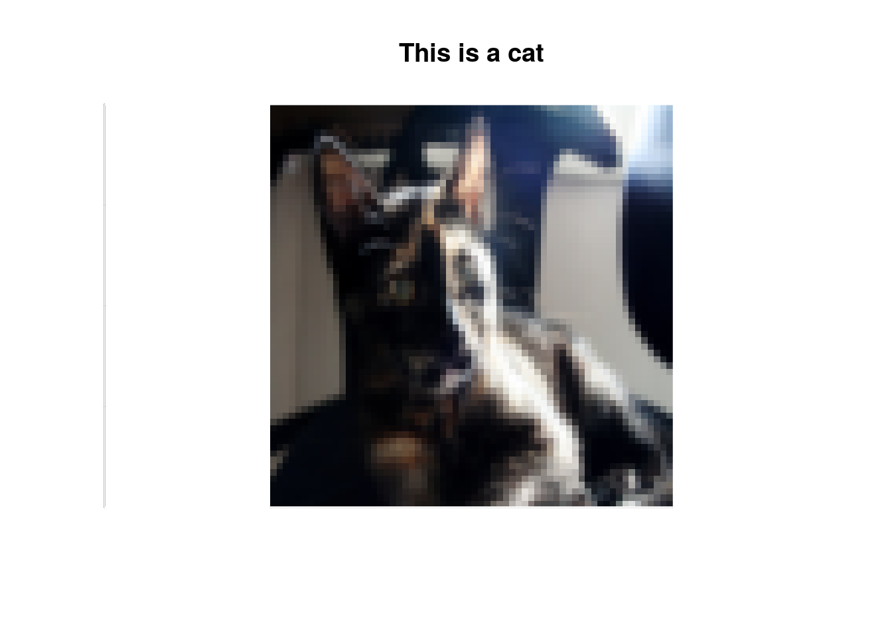

Today I’m going to start a series of 10 posts, one for every week from today, about the most popular Machine Learning (ML) and Deep Learning (DL) clasification algorithms.
Classification algorithms, in a nutshell, give you the possibility to assign a label for each element of your dataset. Even though this action would seem unimportant, there are a lot of real-world applications:
- Cancer diagnosis.
- Deforestation.
- Email spam detection.
- Speech recognition.
- Etc.
These post series do not intend to be a formal ML course, but rather, help you to open the black box and teach you to implement and understand the algorithms correctly. For an easy lecture, all post are going to be written using the same structure:
- 1. Intro:: A simple explanation.
- 2. Preprocessing: Wrangling your data for success.
- 3. From Scratch: Let’s take a look at how the algorithm works.
- 4. Implementation using keras: A high-level API build on TensorFlow (It will make your life easy).
- 5. Implementation using tensorflow: An open source software library for numerical computation using data-flow graphs.
All post will be written using the R package knirt. Also, all the tables and static and dynamic visualizations are building using R too. While the main objective of this serie of tutorials is generate a in-deep knowledge about how really work the ML algorithms. Additionally, I aims to teach you the basic steps to integrate the best of both python (machine learning libraries) and R (tidyverse) into the same workflow.
Note: You need install Rstudio with a version > 1.2 for carry out the python + R integration.
1. Intro:
If you have been studying statistic for a long time (like me), probably you feel at home using Logistic Regression. It is a the prefereable algorithm to initialize new students in the field of Machine Learning due its simplicity.
- Activation Function:
\[\hat{y}^{(i)} = a^{(i)} = sigmoid(z^{(i)})\tag{1}\]
\[z^{(i)} = w^T x^{(i)} + b \tag{2}\]
\[sigmoid(z) = \frac{1}{1 + e^{-z}}\tag{3}\]
- Decision Boundary:
\[\hat{y}^{(i)} < 0.5\tag{4};\ case\_01\]
\[\hat{y}^{(i)} >= 0.5;\ case\_02 \tag{5}\]
- Loss(Error) Function: Cross Entropy
\[ \mathcal{L}(a^{(i)}, y^{(i)}) = - y^{(i)} \log(a^{(i)}) - (1-y^{(i)} ) \log(1-a^{(i)})\tag{6}\]
- Cost Function:
\[ J = \frac{1}{m} \sum_{i=1}^m \mathcal{L}(a^{(i)}, y^{(i)})\tag{7}\]
You will build a simple image-recognition algorithm that can correctly classify pictures as cat or non-cat.
2. Preprocessing
The R + python integration in Rstudio is absurdly easy you only need run the following:
library(reticulate)
library(kableExtra)
knitr::opts_chunk$set(echo = TRUE, eval = TRUE,warning = F,message = F)
use_python("/usr/bin/python3")Before coding do not forget install and load the following libraries.
For python:
import numpy as np
import matplotlib.pyplot as plt
import h5pyimport scipy
from sklearn.model_selection import train_test_splitfrom PIL import Image
from scipy import ndimage
import urllibFor R:
library(tidyverse)
library(raster)Downloading the cats dataset (=ↀωↀ=)

You are given a dataset (cats.h5) containing:
- x_info: a training set with 259 images, each image is of shape 64x64x3 where 3 is for the 3 channels (RGB).
- y_info: array labeled as cat (y=1) or non-cat (y=0).
cat_database = 'https://github.com/csaybar/DLdatasets/raw/master/cats.hdf5'
urllib.request.urlretrieve(cat_database, 'cats.h5')Train/Test split (from hdf5 to numpy)
def load_dataset(test_size = 0.3):
"""
This function convert the cats.h5 dataset in a test and training numpy array.
Argument:
test_size -- If float, should be between 0.0 and 1.0 and represent the proportion of the dataset to include in the test split.
"""
train_dataset = h5py.File('cats.h5', "r")
train_set_x = np.array(train_dataset['x_info'])
train_set_y = np.array(train_dataset['y_info'])
classes = np.array(train_dataset["list_classes"])
tr_x, tst_x, tr_y, tst_y = train_test_split(train_set_x,train_set_y,test_size = test_size)
return tr_x, tr_y, tst_x, tst_y, classes
train_set_x, train_set_y, test_set_x, test_set_y, classes = load_dataset()Is it a cat-picture?
img = 1
image = brick(py$train_set_x[img,,,])
name = py$train_set_y[img]
if (name) {
message = 'This is a cat'
} else {
message = 'This is not a cat'
}
original_par <-par() #original par
par(col.axis="white",col.lab="white",tck=0)
plotRGB(image,axes = TRUE, main = message)
box(col="white")
3. Logistic Regression from Scratch
3.1 Activation function
def sigmoid(z):
"""
Compute the sigmoid of z
Arguments:
z -- A scalar or numpy array of any size.
Return:
s -- sigmoid(z)
"""
s = 1 /(1 + np.exp(-z))
return s3.2 Initializing parameters
def initialize_with_zeros(dim):
"""
This function creates a vector of zeros of shape (dim, 1) for w and initializes b to 0.
Argument:
dim -- size of the w vector we want (or number of parameters in this case)
Returns:
w -- initialized vector of shape (dim, 1)
b -- initialized scalar (corresponds to the bias)
"""
w = np.zeros(shape=(dim, 1), dtype=np.float32)
b = 0
return w, b3.2 Forward and Backward propagation
Now that your parameters are initialized, you can do the “forward” and “backward” propagation steps for learning the parameters.
Exercise: Implement a function propagate() that computes the cost function and its gradient.
Hints:
Forward Propagation: - You get X - You compute \(A = \sigma(w^T X + b) = (a^{(1)}, a^{(2)}, ..., a^{(m-1)}, a^{(m)})\) - You calculate the cost function: \(J = -\frac{1}{m}\sum_{i=1}^{m}y^{(i)}\log(a^{(i)})+(1-y^{(i)})\log(1-a^{(i)})\)
Here are the two formulas you will be using:
\[ \frac{\partial J}{\partial w} = \frac{1}{m}X(A-Y)^T\tag{7}\] \[ \frac{\partial J}{\partial b} = \frac{1}{m} \sum_{i=1}^m (a^{(i)}-y^{(i)})\tag{8}\]
def propagate(w, b, X, Y):
"""
Implement the cost function and its gradient for the propagation explained above
Arguments:
w -- weights, a numpy array of size (num_px * num_px * 3, 1)
b -- bias, a scalar
X -- data of size (num_px * num_px * 3, number of examples)
Y -- true "label" vector (containing 0 if non-cat, 1 if cat) of size (1, number of examples)
Return:
cost -- negative log-likelihood cost for logistic regression
dw -- gradient of the loss with respect to w, thus same shape as w
db -- gradient of the loss with respect to b, thus same shape as b
Tips:
- Write your code step by step for the propagation. np.log(), np.dot()
"""
m = X.shape[1]
# FORWARD PROPAGATION (FROM X TO COST)
A = sigmoid(np.dot(w.T, X) + b) # compute activation
cost = (-1. / m) * np.sum((Y*np.log(A) + (1 - Y)*np.log(1-A)), axis=1) # compute cost
# BACKWARD PROPAGATION (TO FIND GRAD)
dw = (1./m)*np.dot(X,((A-Y).T))
db = (1./m)*np.sum(A-Y, axis=1)
cost = np.squeeze(cost)
grads = {"dw": dw,
"db": db}
return grads, cost3.3 - Optimization
- You have initialized your parameters.
- You are also able to compute a cost function and its gradient.
- Now, you want to update the parameters using gradient descent.
Exercise: Write down the optimization function. The goal is to learn \(w\) and \(b\) by minimizing the cost function \(J\). For a parameter \(\theta\), the update rule is $ = - d$, where \(\alpha\) is the learning rate.
def optimize(w, b, X, Y, num_iterations, learning_rate, print_cost = False):
"""
This function optimizes w and b by running a gradient descent algorithm
Arguments:
w -- weights, a numpy array of size (num_px * num_px * 3, 1)
b -- bias, a scalar
X -- data of shape (num_px * num_px * 3, number of examples)
Y -- true "label" vector (containing 0 if non-cat, 1 if cat), of shape (1, number of examples)
num_iterations -- number of iterations of the optimization loop
learning_rate -- learning rate of the gradient descent update rule
print_cost -- True to print the loss every 100 steps
Returns:
params -- dictionary containing the weights w and bias b
grads -- dictionary containing the gradients of the weights and bias with respect to the cost function
costs -- list of all the costs computed during the optimization, this will be used to plot the learning curve.
Tips:
You basically need to write down two steps and iterate through them:
1) Calculate the cost and the gradient for the current parameters. Use propagate().
2) Update the parameters using gradient descent rule for w and b.
"""
costs = []
for i in range(num_iterations):
# Cost and gradient calculation (≈ 1-4 lines of code)
grads, cost = propagate(w=w, b=b, X=X, Y=Y)
# Retrieve derivatives from grads
dw = grads["dw"]
db = grads["db"]
# update rule (≈ 2 lines of code)
w = w - learning_rate*dw
b = b - learning_rate*db
# Record the costs
if i % 100 == 0:
costs.append(cost)
# Print the cost every 100 training iterations
if print_cost and i % 100 == 0:
print ("Cost after iteration %i: %f" %(i, cost))
params = {"w": w,
"b": b}
grads = {"dw": dw,
"db": db}
return params, grads, costs3.4 - Prediction
def predict(w, b, X):
'''
Predict whether the label is 0 or 1 using learned logistic regression parameters (w, b)
Arguments:
w -- weights, a numpy array of size (num_px * num_px * 3, 1)
b -- bias, a scalar
X -- data of size (num_px * num_px * 3, number of examples)
Returns:
Y_prediction -- a numpy array (vector) containing all predictions (0/1) for the examples in X
'''
m = X.shape[1]
Y_prediction = np.zeros((1,m))
w = w.reshape(X.shape[0], 1)
# Compute vector "A" predicting the probabilities of a cat being present in the picture
### START CODE HERE ### (≈ 1 line of code)
A = sigmoid(np.dot(w.T, X) + b)
### END CODE HERE ###
for i in range(A.shape[1]):
# Convert probabilities A[0,i] to actual predictions p[0,i]
### START CODE HERE ### (≈ 4 lines of code)
if A[0, i] >= 0.5:
Y_prediction[0, i] = 1
else:
Y_prediction[0, i] = 0
### END CODE HERE ###
assert(Y_prediction.shape == (1, m))
return Y_prediction3.5 - Model
# GRADED FUNCTION: model
def model(X_train, Y_train, X_test, Y_test, num_iterations = 2000, learning_rate = 0.5, print_cost = False):
"""
Builds the logistic regression model by calling the function you've implemented previously
Arguments:
X_train -- training set represented by a numpy array of shape (num_px * num_px * 3, m_train)
Y_train -- training labels represented by a numpy array (vector) of shape (1, m_train)
X_test -- test set represented by a numpy array of shape (num_px * num_px * 3, m_test)
Y_test -- test labels represented by a numpy array (vector) of shape (1, m_test)
num_iterations -- hyperparameter representing the number of iterations to optimize the parameters
learning_rate -- hyperparameter representing the learning rate used in the update rule of optimize()
print_cost -- Set to true to print the cost every 100 iterations
Returns:
d -- dictionary containing information about the model.
"""
### START CODE HERE ###
# initialize parameters with zeros (≈ 1 line of code)
w, b = initialize_with_zeros(X_train.shape[0])
# Gradient descent (≈ 1 line of code)
parameters, grads, costs = optimize(w, b, X_train, Y_train, num_iterations, learning_rate, print_cost)
# Retrieve parameters w and b from dictionary "parameters"
w = parameters["w"]
b = parameters["b"]
# Predict test/train set examples (≈ 2 lines of code)
Y_prediction_test = predict(w, b, X_test)
Y_prediction_train = predict(w, b, X_train)
### END CODE HERE ###
# Print train/test Errors
print("train accuracy: {} %".format(100 - np.mean(np.abs(Y_prediction_train - Y_train)) * 100))
print("test accuracy: {} %".format(100 - np.mean(np.abs(Y_prediction_test - Y_test)) * 100))
d = {"costs": costs,
"Y_prediction_test": Y_prediction_test,
"Y_prediction_train" : Y_prediction_train,
"w" : w,
"b" : b,
"learning_rate" : learning_rate,
"num_iterations": num_iterations}
return d